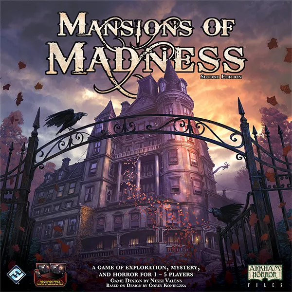

My favourite Board Games
 |
Elder Sign |
Elder Sign is a fast-paced, cooperative dice game of supernatural intrigue for one to eight players by Richard Launius and Kevin Wilson, the designers of Arkham Horror. Players take the roles of investigators racing against time to stave off the imminent return of the Ancient One. Armed with tools, allies, and occult knowledge, investigators must put their sanity and stamina to the test as they adventure to locate Elder Signs, the eldritch symbols used to seal away the Ancient Ones and win the game. |
|
 |
Project Elite |
In Project: ELITE, players are members of the ELITE squad on a mission to stop the invading forces of an alien empire. Stopping the invasion requires players to speedily roll dice as they take part in real-time, two-minute combat rounds against waves of terrifying enemies. Once the ELITE members take their turn, the aliens react. The game continues in this fast-yet-tactical series of rounds until the scenario is won or the aliens take the Earth. |
|
 |
Star Realms |
Star Realms is a fast paced deck-building card game of outer space combat. It combines the fun of a deck-building game with the interactivity of Trading Card Game style combat. As you play, you make use of Trade to acquire new Ships and Bases from the cards being turned face up in the Trade Row from the Trade Deck. You use the Ships and Bases you acquire to either generate more Trade or to generate Combat to attack your opponent and their bases. When you reduce your opponents score (called Authority) to zero, you win! |
|
 |
Ancient Terrible Things |
In Ancient Terrible Things, a pulp horror adventure game for 2-4 players, you play the role of an intrepid adventurer, exploring a dark jungle river. Each turn you must travel to a Fateful Location, face an Ominous Encounter, and attempt to unlock its Ancient Secrets. If you succeed (using a combination of dice, tokens and cards), you add the Secrets to your score; if you fail, you unleash a Terrible Thing, which counts against your score at the end of the game. The object of the game is to be the player with the most Ancient Secrets when the game ends at the Unspeakable Event. |
|
|  | Mansions of Madness |
Mansions of Madness: Second Edition is a fully co-operative, app-driven board game of horror and mystery for one to five players that takes place in the same universe as Eldritch Horror and Elder Sign. Let the immersive app guide you through the veiled streets of Innsmouth and the haunted corridors of Arkham's cursed mansions as you search for answers and respite. Eight brave investigators stand ready to confront four scenarios of fear and mystery, collecting weapons, tools, and information, solving complex puzzles, and fighting monsters, insanity, and death. Open the door and step inside these hair-raising Mansions of Madness. It will take more than just survival to conquer the evils terrorizing this town. |